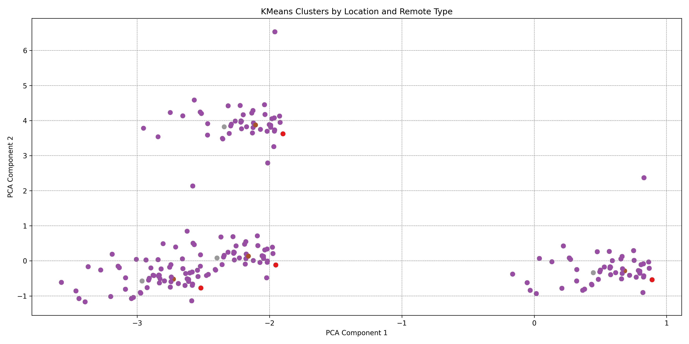

Code
import pandas as pd
df = pd.read_csv("data/lightcast_job_postings.csv")
print(df.columns.tolist())This section presents our machine learning models to analyze geographic and remote work patterns in the 2024 U.S. job market. We apply both unsupervised and supervised learning methods to gain insights into how job locations and remote types impact salaries and job classifications.
To better understand remote work trends, we used KMeans clustering to group job postings based on three key features: STATE_NAME, REMOTE_TYPE_NAME, and SOC_2021_4. These variables capture geographic and job-type information, helping us explore whether certain kinds of work—remote, hybrid, or on-site—are more common in particular states or industries. The clustering results, visualized using PCA, reveal clear patterns related to both location and remote work preferences. These insights can be useful for job seekers trying to identify which types of roles or industries are more likely to support flexible work arrangements.
import pandas as pd
df = pd.read_csv("data/lightcast_job_postings.csv")
print(df.columns.tolist())import pandas as pd
import matplotlib.pyplot as plt
from sklearn.cluster import KMeans
from sklearn.preprocessing import StandardScaler
from sklearn.decomposition import PCA
# STEP 1: Load your cleaned dataset
df = pd.read_csv("data/lightcast_job_postings.csv")
# STEP 2: Select columns
cols = ['STATE_NAME', 'REMOTE_TYPE_NAME', 'SOC_2021_4']
df_cluster = df[cols].dropna()
df_cluster_encoded = pd.get_dummies(df_cluster)
# STEP 3: Scale and cluster
scaler = StandardScaler()
X_scaled = scaler.fit_transform(df_cluster_encoded)
kmeans = KMeans(n_clusters=4, random_state=42)
clusters = kmeans.fit_predict(X_scaled)
df_cluster['Cluster'] = clusters
# STEP 4: Visualize with PCA
pca = PCA(n_components=2)
components = pca.fit_transform(X_scaled)
plt.figure(figsize=(8,6))
plt.scatter(components[:, 0], components[:, 1], c=clusters, cmap='Set2')
plt.title("KMeans Clusters by Location and Remote Type")
plt.xlabel("PCA Component 1")
plt.ylabel("PCA Component 2")
# save the figure
plt.tight_layout()
plt.savefig("figuresmurphy/kmeans_location_remote_pca.png", dpi=300)
plt.show()
Interpretation: The PCA scatter plot reveals four distinct clusters of job postings, segmented by location (STATE_NAME), remote type (REMOTE_TYPE_NAME), and occupation code (SOC_2021_4). We see a clear separation among the clusters—three are relatively compact, while one appears more dispersed. This indicates that job characteristics like remote work availability and occupation type tend to align closely with geographic regions and specific industries. The tightly grouped clusters likely represent roles with consistent remote work policies, while the spread-out cluster may include a broader mix of job types.
To understand what factors influence whether a job is remote, hybrid, or on-site, we trained a Random Forest Classifier using three features: STATE_NAME (location), SOC_2021_4 (job category), and MAX_YEARS_EXPERIENCE (seniority level).The model’s performance is summarized in a confusion matrix, which shows how accurately it distinguishes between different types of remote work arrangements.
# Import libraries
from sklearn.model_selection import train_test_split
from sklearn.ensemble import RandomForestClassifier
from sklearn.metrics import classification_report, confusion_matrix
import seaborn as sns
import matplotlib.pyplot as plt
# Prepare dataset
df_class = df[['STATE_NAME', 'SOC_2021_4', 'MAX_YEARS_EXPERIENCE', 'REMOTE_TYPE_NAME']].dropna()
df_class_encoded = pd.get_dummies(df_class, columns=['STATE_NAME', 'SOC_2021_4'])
X = df_class_encoded.drop('REMOTE_TYPE_NAME', axis=1)
y = df_class['REMOTE_TYPE_NAME']
# Train/test split
X_train, X_test, y_train, y_test = train_test_split(X, y, test_size=0.3, random_state=42)
# Train classifier
clf = RandomForestClassifier(random_state=42)
clf.fit(X_train, y_train)
y_pred = clf.predict(X_test)
# Print performance
print(classification_report(y_test, y_pred))
print(confusion_matrix(y_test, y_pred))
# Visualize confusion matrix
plt.figure(figsize=(6,5))
sns.heatmap(confusion_matrix(y_test, y_pred), annot=True, fmt='d', cmap='Blues')
plt.title("Confusion Matrix - Remote Work Type Classifier")
plt.xlabel("Predicted")
plt.ylabel("Actual")
plt.tight_layout()
# Save
plt.savefig("figuresmurphy/confusion_matrix_remote_type.png", dpi=300)
plt.show()
Interpretation: The model accurately predicts class 3, but often misclassifies classes 0, 1, and 2 as 3, showing a bias toward the most common remote type. Job seekers should clearly state remote preferences, as nuanced roles may be missed by automated systems.
We applied a Random Forest Regressor to estimate average salary using location, experience, remote type, and job category. The model captures complex patterns, highlighting how these factors shape compensation.
# Step 1: Create AVERAGE_SALARY if not already in df
df['SALARY_FROM'] = pd.to_numeric(df['SALARY_FROM'], errors='coerce')
df['SALARY_TO'] = pd.to_numeric(df['SALARY_TO'], errors='coerce')
df['AVERAGE_SALARY'] = (df['SALARY_FROM'] + df['SALARY_TO']) / 2
# Step 2: Drop rows with missing values in key columns
df_reg = df[['STATE_NAME', 'SOC_2021_4', 'REMOTE_TYPE_NAME', 'MAX_YEARS_EXPERIENCE', 'AVERAGE_SALARY']].dropna()
# Step 3: One-hot encoding
df_reg_encoded = pd.get_dummies(df_reg, columns=['STATE_NAME', 'SOC_2021_4', 'REMOTE_TYPE_NAME'])
# Step 4: Split X and y
X = df_reg_encoded.drop('AVERAGE_SALARY', axis=1)
y = df_reg_encoded['AVERAGE_SALARY']
# Step 5: Train/test split
from sklearn.model_selection import train_test_split
X_train, X_test, y_train, y_test = train_test_split(X, y, test_size=0.3, random_state=42)
# Step 6: Train Random Forest Regressor
from sklearn.ensemble import RandomForestRegressor
model = RandomForestRegressor(random_state=42)
model.fit(X_train, y_train)
# Step 7: Predict
y_pred = model.predict(X_test)
# Step 8: Evaluate
from sklearn.metrics import mean_squared_error, mean_absolute_error, r2_score
print("Mean Squared Error:", mean_squared_error(y_test, y_pred))
print("Mean Absolute Error:", mean_absolute_error(y_test, y_pred))
print("R2 Score:", r2_score(y_test, y_pred))
import matplotlib.pyplot as plt
plt.figure(figsize=(6,6))
plt.scatter(y_test, y_pred, alpha=0.5)
plt.plot([y_test.min(), y_test.max()], [y_test.min(), y_test.max()], 'r--')
plt.xlabel("Actual Salary")
plt.ylabel("Predicted Salary")
plt.title("Actual vs Predicted Salary")
plt.tight_layout()
plt.savefig("figuresmurphy/actual_vs_predicted_salary.png", dpi=300)
plt.show()
Interpretation: The plot shows a strong alignment between predicted and actual salaries, with most points near the red dashed line—indicating good model performance. Some deviations, especially in higher salary ranges, reflect the difficulty of predicting roles with greater variability in seniority and industry.
import pandas as pd
import matplotlib.pyplot as plt
df_geo = df[['STATE_NAME', 'REMOTE_TYPE_NAME']].dropna()
）
state_remote_counts = pd.crosstab(df_geo['STATE_NAME'], df_geo['REMOTE_TYPE_NAME'])
# visualization
state_remote_counts.plot(kind='bar', stacked=True, figsize=(14,6))
plt.title("Remote Work Type Distribution by State")
plt.xlabel("State")
plt.ylabel("Number of Job Postings")
plt.xticks(rotation=90)
plt.tight_layout()
plt.savefig("figuresmurphy/remote_type_by_state.png", dpi=300)
plt.show()
Interpretation: The bar chart shows that states like California, New York, and Texas have a high volume of job postings across all remote types. Remote roles are especially common in tech-focused states like California and Washington, while on-site jobs are more prevalent in states with stronger manufacturing industries.
We used a boxplot to compare salaries across remote types, helping job seekers understand potential income differences between remote, hybrid, and on-site roles.
import seaborn as sns
import matplotlib.pyplot as plt
# deal with salary list
df_salary = df[['REMOTE_TYPE_NAME', 'SALARY']].dropna()
df_salary = df_salary[df_salary['SALARY'] < 300000] # 过滤异常值（可选）
plt.figure(figsize=(8,6))
sns.boxplot(data=df_salary, x='REMOTE_TYPE_NAME', y='SALARY')
plt.title("Salary Distribution by Remote Work Type")
plt.xlabel("Remote Work Type")
plt.ylabel("Salary")
plt.tight_layout()
plt.savefig("figuresmurphy/salary_by_remote_type.png", dpi=300)
plt.show()
Interpretation: Remote roles generally show a higher median salary than hybrid or on-site positions. However, the range is wider, indicating more salary volatility. On-site jobs show tighter salary ranges, likely due to standardized pay scales in location-bound industries.
remote_ratio_by_state.sort_values('REMOTE_RATIO', ascending=False).head(10)We used a choropleth map to visually represent the percentage of remote jobs per state. This spatial analysis can guide job seekers toward states with more flexible work environments.
import pandas as pd
import plotly.express as px
import pandas as pd
import plotly.express as px
# 1. Create a full name -> abbreviation mapping table
state_abbrev_map = {
'Alabama': 'AL', 'Alaska': 'AK', 'Arizona': 'AZ', 'Arkansas': 'AR', 'California': 'CA',
'Colorado': 'CO', 'Connecticut': 'CT', 'Delaware': 'DE', 'Florida': 'FL', 'Georgia': 'GA',
'Hawaii': 'HI', 'Idaho': 'ID', 'Illinois': 'IL', 'Indiana': 'IN', 'Iowa': 'IA',
'Kansas': 'KS', 'Kentucky': 'KY', 'Louisiana': 'LA', 'Maine': 'ME', 'Maryland': 'MD',
'Massachusetts': 'MA', 'Michigan': 'MI', 'Minnesota': 'MN', 'Mississippi': 'MS',
'Missouri': 'MO', 'Montana': 'MT', 'Nebraska': 'NE', 'Nevada': 'NV', 'New Hampshire': 'NH',
'New Jersey': 'NJ', 'New Mexico': 'NM', 'New York': 'NY', 'North Carolina': 'NC',
'North Dakota': 'ND', 'Ohio': 'OH', 'Oklahoma': 'OK', 'Oregon': 'OR', 'Pennsylvania': 'PA',
'Rhode Island': 'RI', 'South Carolina': 'SC', 'South Dakota': 'SD', 'Tennessee': 'TN',
'Texas': 'TX', 'Utah': 'UT', 'Vermont': 'VT', 'Virginia': 'VA', 'Washington': 'WA',
'West Virginia': 'WV', 'Wisconsin': 'WI', 'Wyoming': 'WY'
}
# 2. Add a column of state abbreviations
remote_ratio_by_state['STATE_ABBR'] = remote_ratio_by_state['STATE_NAME'].map(state_abbrev_map)
print(remote_ratio_by_state[['STATE_NAME', 'STATE_ABBR']].head())
fig = px.choropleth(
remote_ratio_by_state,
locations='STATE_ABBR',
locationmode='USA-states',
color='REMOTE_RATIO',
scope='usa',
color_continuous_scale='Blues',
title='Proportion of Remote Jobs by State (Using State Abbreviations)',
width=1000,
height=600
)
fig.write_image("figuresmurphy/choropleth.png", scale=2)
fig.show()
Interpretation: The map highlights that coastal and urban states like California, New York, and Massachusetts have more remote roles. In contrast, Midwest and Southern states show fewer remote postings, likely due to a stronger focus on in-person or manufacturing jobs.
To identify what influences whether a job is remote, we used a logistic regression model. The confusion matrix below summarizes how well the model classifies remote and non-remote roles.
import pandas as pd
import seaborn as sns
import matplotlib.pyplot as plt
from sklearn.model_selection import train_test_split
from sklearn.linear_model import LogisticRegression
from sklearn.metrics import classification_report, confusion_matrix
# 1. Preprocessing
df_logistic = df[['STATE_NAME', 'MAX_YEARS_EXPERIENCE', 'AVERAGE_SALARY', 'REMOTE_TYPE_NAME']].dropna()
df_logistic['REMOTE_TYPE_CLEANED'] = df_logistic['REMOTE_TYPE_NAME'].map({
'Remote': 'Remote',
'Hybrid Remote': 'Hybrid',
'Not Remote': 'Onsite'
}).fillna('Onsite')
# Create binary classification target
df_logistic['IS_REMOTE'] = df_logistic['REMOTE_TYPE_CLEANED'].apply(lambda x: 1 if x == 'Remote' else 0)
# 2. One-hot encode state name
df_encoded = pd.get_dummies(df_logistic, columns=['STATE_NAME'], drop_first=True)
# 3. Split data
X = df_encoded.drop(['IS_REMOTE', 'REMOTE_TYPE_NAME', 'REMOTE_TYPE_CLEANED'], axis=1)
y = df_encoded['IS_REMOTE']
X_train, X_test, y_train, y_test = train_test_split(X, y, test_size=0.3, random_state=42)
# 4. Train model
model = LogisticRegression(max_iter=1000)
model.fit(X_train, y_train)
y_pred = model.predict(X_test)
# 5. Evaluation
print("Confusion Matrix:\n", confusion_matrix(y_test, y_pred))
print("\nClassification Report:\n", classification_report(y_test, y_pred))
# 6. Visualize confusion matrix
plt.figure(figsize=(6,4))
sns.heatmap(confusion_matrix(y_test, y_pred), annot=True, fmt='d', cmap='Blues')
plt.title("Confusion Matrix 热力图")
plt.xlabel("预测值 Predicted")
plt.ylabel("实际值 Actual")
plt.tight_layout()
plt.savefig("figuresmurphy/logistic_confusion_matrix.png", dpi=300)
plt.show()Interpretation: The model accurately distinguishes remote from non-remote jobs, performing better on non-remote roles. Some misclassifications remain, so job seekers in flexible roles should clearly state their work preferences.
We also used a linear regression model to predict average salary based on location, experience, and remote type. The actual vs. predicted plot and residuals histogram below show the model’s performance.
from sklearn.linear_model import LinearRegression
from sklearn.metrics import mean_squared_error, r2_score
import matplotlib.pyplot as plt
# 1. 预处理 Preprocessing
df_reg = df[['STATE_NAME', 'MAX_YEARS_EXPERIENCE', 'REMOTE_TYPE_NAME', 'AVERAGE_SALARY']].dropna()
df_reg = df_reg[df_reg['AVERAGE_SALARY'] < 300000] # 去除极端值 Remove salary outliers
df_reg['REMOTE_TYPE_CLEANED'] = df_reg['REMOTE_TYPE_NAME'].map({
'Remote': 'Remote',
'Hybrid Remote': 'Hybrid',
'Not Remote': 'Onsite'
}).fillna('Onsite')
# 2. One-hot 编码 One-hot encode
df_reg_encoded = pd.get_dummies(df_reg, columns=['STATE_NAME', 'REMOTE_TYPE_CLEANED'], drop_first=True)
# 3. 拆分数据 Split data
X = df_reg_encoded.drop(['REMOTE_TYPE_NAME', 'AVERAGE_SALARY'], axis=1)
y = df_reg_encoded['AVERAGE_SALARY']
X_train, X_test, y_train, y_test = train_test_split(X, y, test_size=0.3, random_state=42)
# 4. 建模 Train model
reg_model = LinearRegression()
reg_model.fit(X_train, y_train)
y_pred = reg_model.predict(X_test)
# 5. 评估 Evaluation
print("MSE:", mean_squared_error(y_test, y_pred))
print("R-squared:", r2_score(y_test, y_pred))
# 6. 可视化 - 实际 vs 预测工资散点图 Scatterplot of actual vs predicted
plt.figure(figsize=(6, 5))
plt.scatter(y_test, y_pred, alpha=0.5)
plt.xlabel("实际工资 Actual Salary")
plt.ylabel("预测工资 Predicted Salary")
plt.title("实际 vs 预测工资散点图 (Actual vs. Predicted Salary)")
plt.tight_layout()
plt.savefig("figuresmurphy/regression_actual_vs_predicted.png", dpi=300)
plt.show()
# 7. 可视化 - 残差分布图 Residuals histogram
residuals = y_test - y_pred
plt.figure(figsize=(6, 4))
plt.hist(residuals, bins=30, color='orange', edgecolor='black')
plt.title("残差分布图 Residuals Histogram")
plt.xlabel("残差 Residuals")
plt.ylabel("频率 Frequency")
plt.tight_layout()
plt.savefig("figuresmurphy/regression_residuals.png", dpi=300)
plt.show()
Interpretation: The plot shows a clear linear trend but with greater dispersion compared to the random forest model, indicating that linear regression struggles to capture more complex salary patterns.

Interpretation: The residuals histogram is roughly normal and centered around zero, suggesting no major bias. However, the spread shows that predictions can vary by several thousand dollars based on the input features.